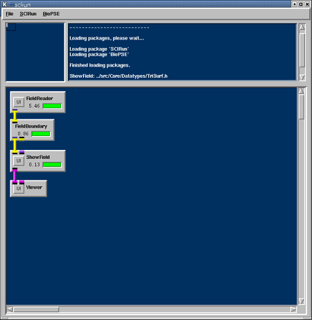
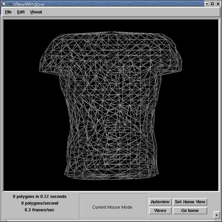
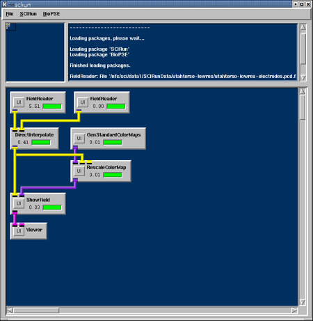
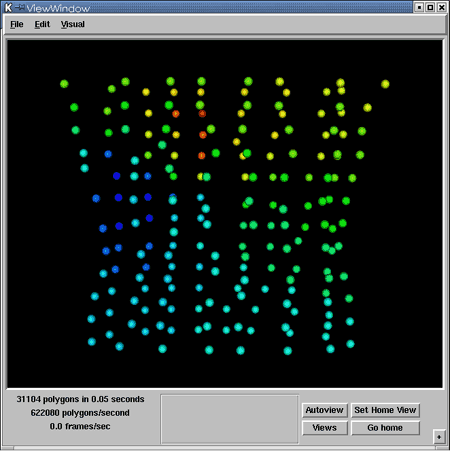
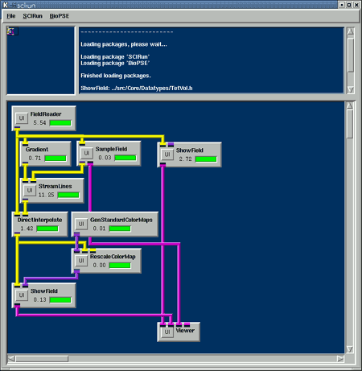
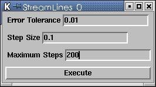
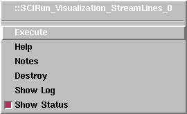
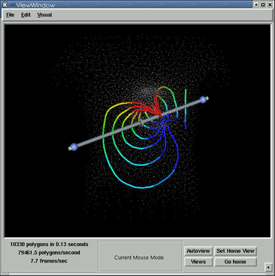

|
Chapter Overview In Chapters 1 and 2, we constructed SCIRun networks to visualize the geometry and data values in a Field. In this Chapter, we will explore more visualization techniques, and look at "filter" modules that input a Field, and produce a new derived Field as output. Rather than building one net to introduce all of these new modules, we will construct several nets, each describing a single technique. To keep things simple, we have subdivided this chapter into three sections, one for each method. We will first implement will be a boundary extraction. This module takes any type of Field as input, and produces a new Field that only contains the boundary as output. For example, given a tetrahedral volume Field, the module produces a triangulated surface Field of just the boundary faces as output. To create a net using the FieldBoundary module (SCIRun/Fields/FieldBoundary):
Your net should look like Figure 3.1; the view in the Viewer window should look like Figure 3.2. 

Another useful technique for visualizing data is to interpolate data values from one Field to another Field. In this section, we will read in two datasets:
We want to output a new Field containing the positions (as geometry) of the electrodes and corresponding voltage values interpolated from the utahtorso volume. The utahtorso volume Field contains simulated voltage values through the entire volume. For each electrode position of the electrodes, we must look up the corresponding voltage value from the volume field. The module that implements this algorithm is called DirectInterpolate (SCIRun/Fields/DirectInterpolate). To implement the net described above, we will need:
These should be hooked together as shown in Figure 3.3. NOTE: Don't forget to a) set the Node scale in the ShowField UI to be at least 2--4, and b) hit the Autoview button in the Viewer window. 
The FieldReader on the left should read in the utahtorso-lowres-voltage.tvd.fld input file, and the FieldReader on the right should read in the utahtorso-lowres-electrodes.pcd.fld input file. The resulting image in the Viewer Window should look like Figure 3.4. 
Streamline advection is the last visualization technique we will explore in this chapter. The StreamLine module takes in a vector Field and a Field of sample points. The module then outputs a new Field consisting of a sequence of path-integral curves generated from advecting (integrating) the sample positions through the (derivative) vector Field. We will generate the input vector Field by using the Gradient module (SCIRun/Fields/Gradient) to compute the gradient of the utahtorso-lowres-voltage.tvd.fld (the gradient of the electric potential is equal to the negative of the electric field):
To generate a sample distribution of StreamLine seed points, we will use the SampleField module. SampleField generates samples from any type of input field and outputs the samples as a PointCloud field.
The SampleField module can generate the samples randomly or we can select this via a 3D widget. For StreamLine visualization, we use a 3D "rake" widget to place our distribution of seed points. To interactively position the rake of seed points within the volume:
At this point, we have streamlines coming out of the StreamLines module, and we would like to render them. Before we do, we attach scalar data values to the StreamLine nodes. To accomplish this, we use the DirectInterpolate module described above. To create the visualization:
With everything attached, we should have a network like that in Figure 3.5. 
The StreamLines module works by integrating the seed points through the vector Field. We use a fifth order integration method: Runge-Kutta-Fehlberg algorithm. To run this algorithm, we must set three parameters: Error Tolerance, Step Size, and a Maximum Number of Steps. Set these three parameters to 0.01, 0.1, and 200, respectively, in the StreamLines UI (as shown in Figure 3.6). 
Controlling Widgets The rake is one of a family of widgets--graphical elements in the Viewer that allow the user to control interactively some features of the display. The SCIRun widgets have a similar look and feel, but manipulate different aspects of the display,as detailed in the User's Guide 5.4, Control Widgets. You can control widgets by:
Network execution and data
dependence There are several ways to execute a SCIRun network that has not yet "fired."

Now, back to the action! After executing the network, you should see an image like Figure 3.8 in the Viewer window. The rake widget appears as a gray stick in this scene. You may not get quite the same image as in the figure, but you should see the rake and colored streamlines coming from it. 
In the next chapter, we will merge those nets into a single,
larger network
that performs concurrent visualizations.
|